Обзор реализованных фич и закрытых задач
за период 20.03 — 20.04.2026
Раньше карточка открывалась в модальном окне и закрывала всю доску. Теперь она открывается в боковой панели справа — можно продолжать работать с доской одновременно с карточкой.
Долгожданная фича — пользователи не теряют контекст доски при работе с карточкой.
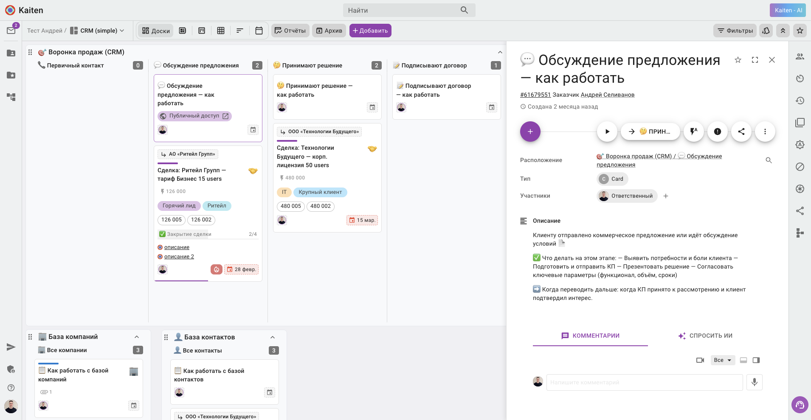
После релиза каталогов пользователи попросили возможность загружать свои данные массово. Мы оперативно сделали импорт из XLS и CSV.
Пользователи переносят существующие базы в Kaiten за минуты, а не за часы ручного ввода.
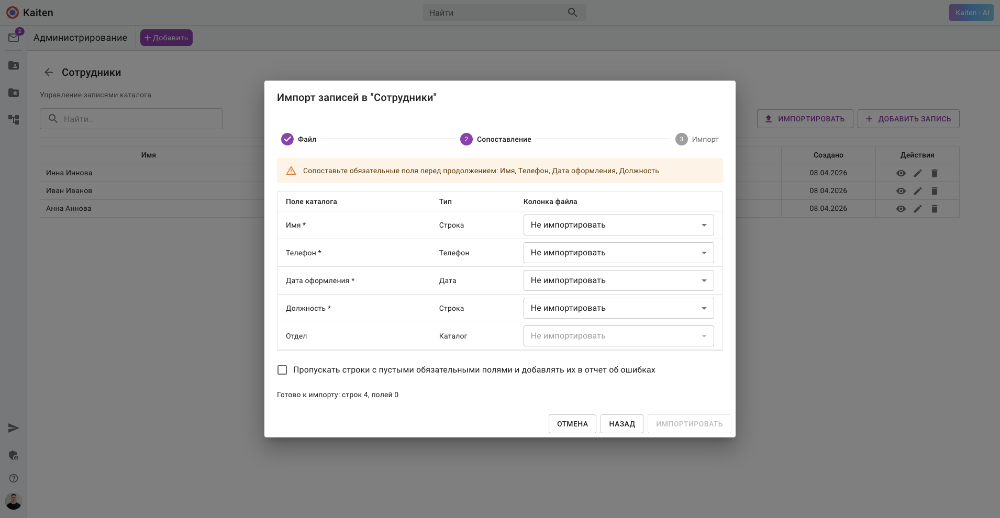
Теперь всё работает стабильно, зарелижено и дополнено новой информацией.
Воронка показывает не только числа, но и людей за каждой сделкой.
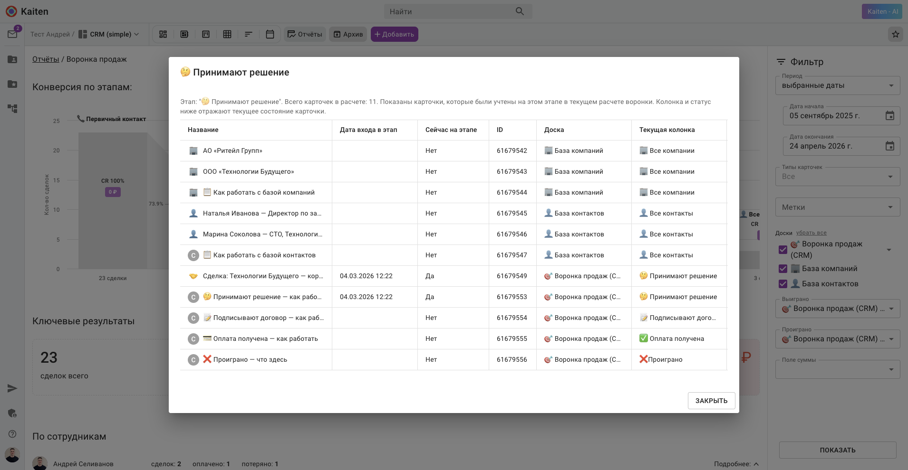
Из-за блокировок некоторых мессенджеров пользователи активно просили интеграцию с MAX. Мы её сделали — со своими инфраструктурными сложностями, но в целом готово к релизу на всех.
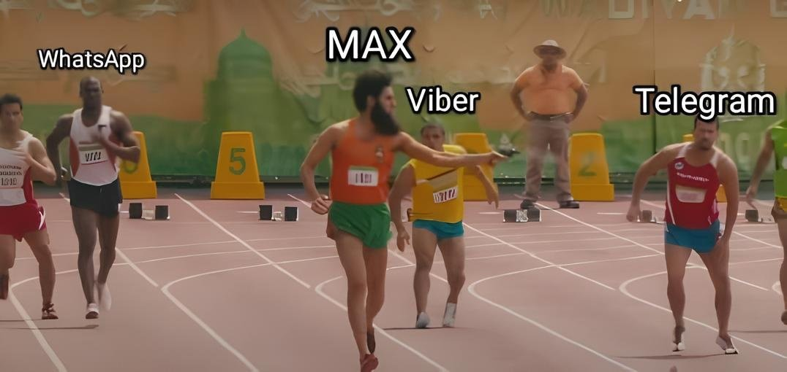
Ещё одна доработка для CRM. Входящие заявки теперь автоматически и равномерно распределяются между сотрудниками — по принципу карусели.
Справедливое распределение — без ручной сортировки руководителем.
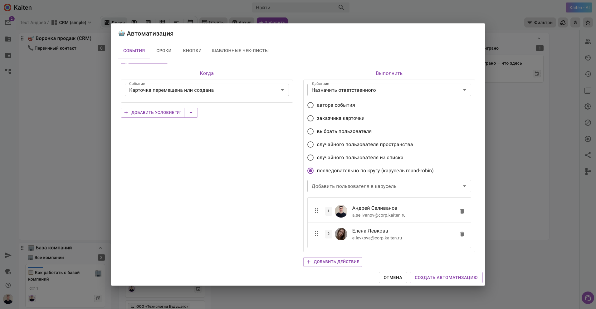
Раньше контекстные меню на фасаде и внутри карточки различались и по структуре, и по UI, и по паттернам, иконкам и пунктам. Мы всё причесали.
Пользователь видит одинаковые действия в одинаковых местах — меньше когнитивной нагрузки.
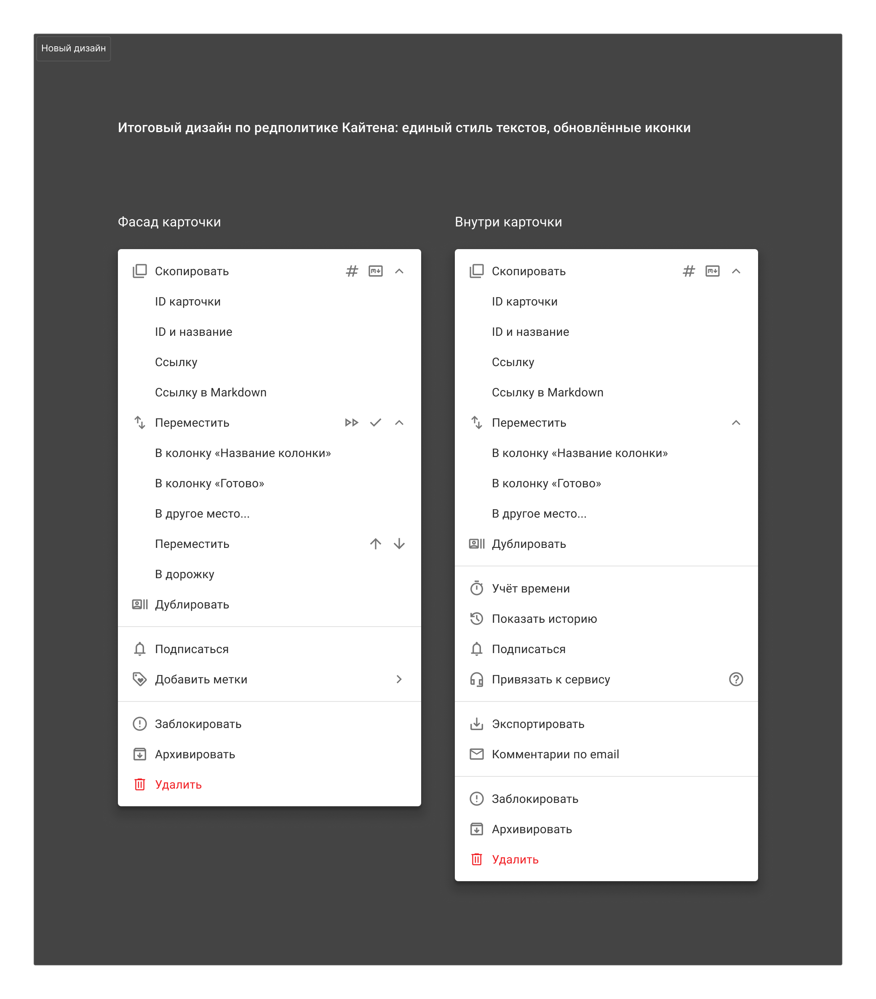
Интеграция с телефонией Sipuni теперь доступна всем пользователям. Мы переработали модальное окно настройки — сделали его пошаговым.
Сложная настройка превратилась в простой пошаговый мастер.
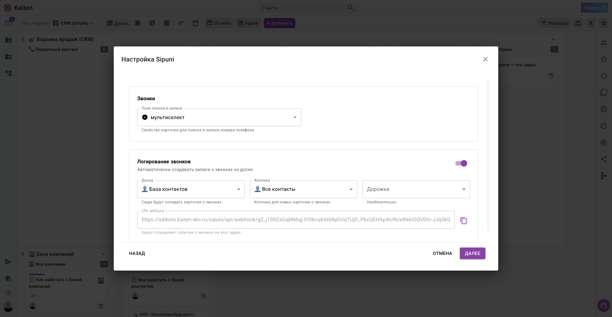
Доработка к CRM. Теперь публичные сущности можно копировать вместе с кастомными полями и их значениями. Это даёт главный бонус — мы можем публиковать готовый шаблон CRM.
Две кнопки — и у пользователя полностью рабочая CRM. Можно сразу пользоваться.
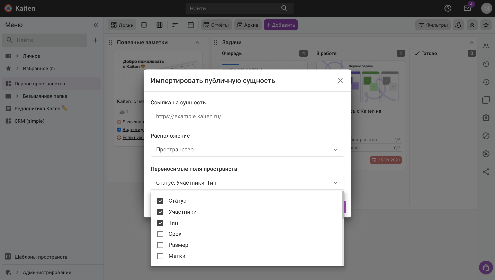
Доработали экспорт компании: теперь данные выгружаются на наш S3-сервер вместо Яндекс Диска.
Экспорты стали быстрее и надёжнее — без зависимости от внешнего сервиса.
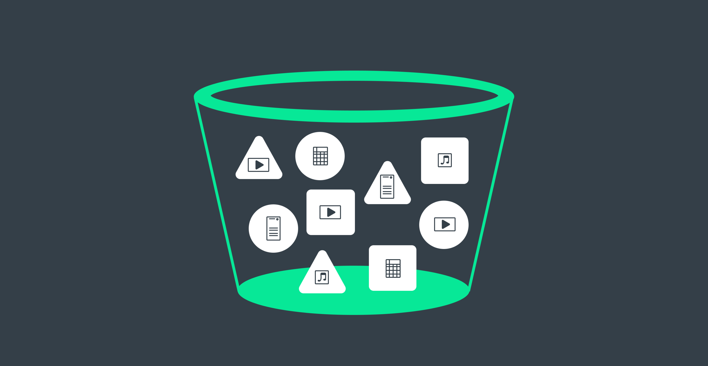
Спроектировали и запустили новый сервис, интегрированный с Kaiten и биллингом. Партнёры управляют своими лидами и клиентами, у администраторов — отдельный функционал.
Мы выступали скорее как команда на аутсорсе — выделили разработчика, основную работу вёл Володя Квятковский.
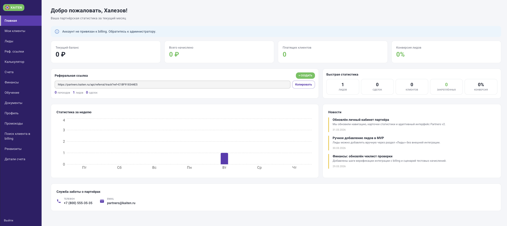
Январь → Март → Апрель. Три месяца работы B // Product.
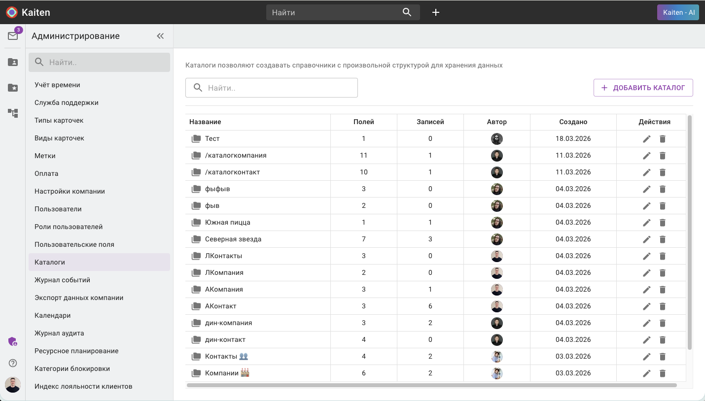
Каталоги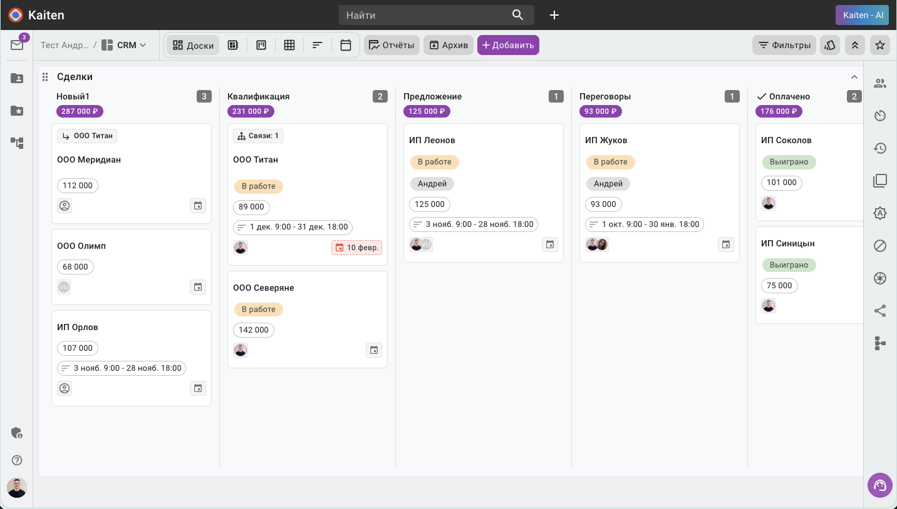
Новые карточки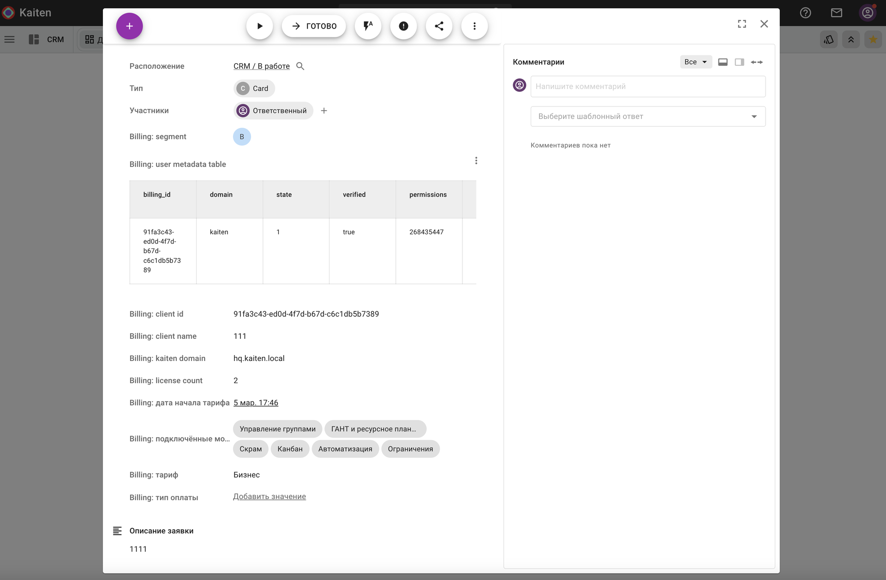
Сервис Деск — автозаполнение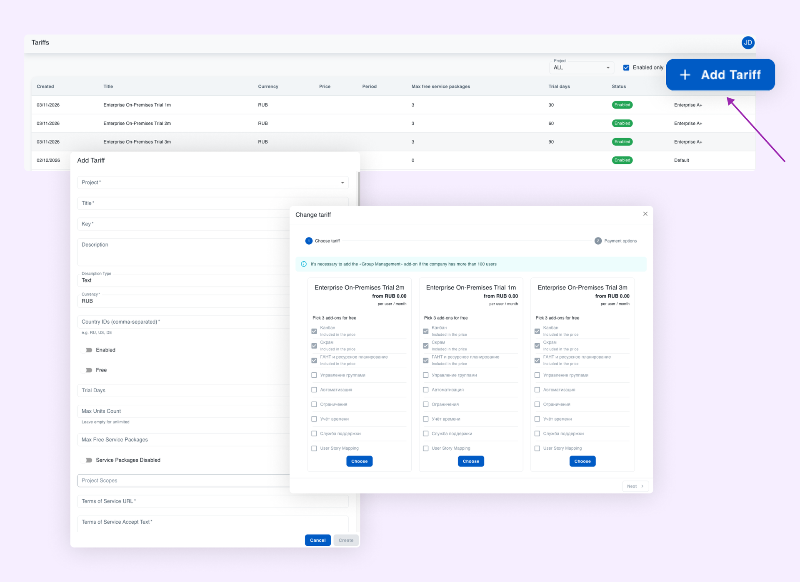
Биллинг — тарифы через интерфейс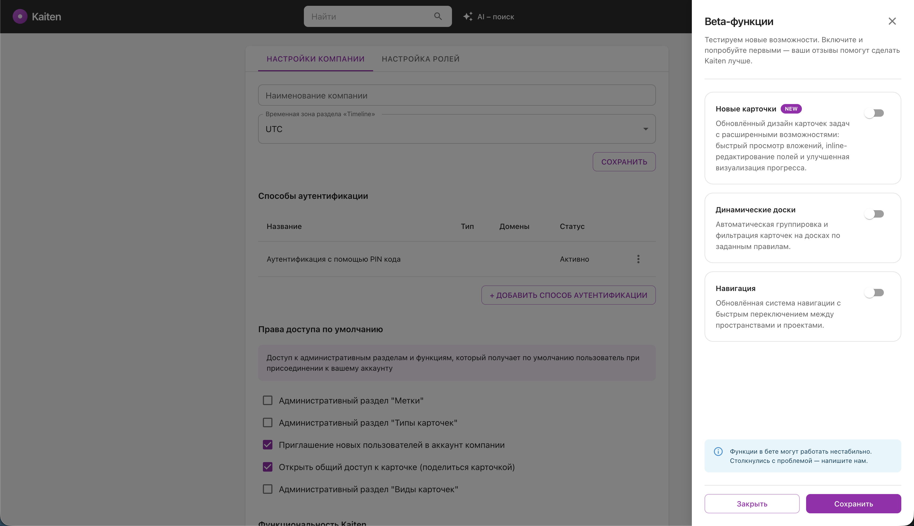
Бета-функции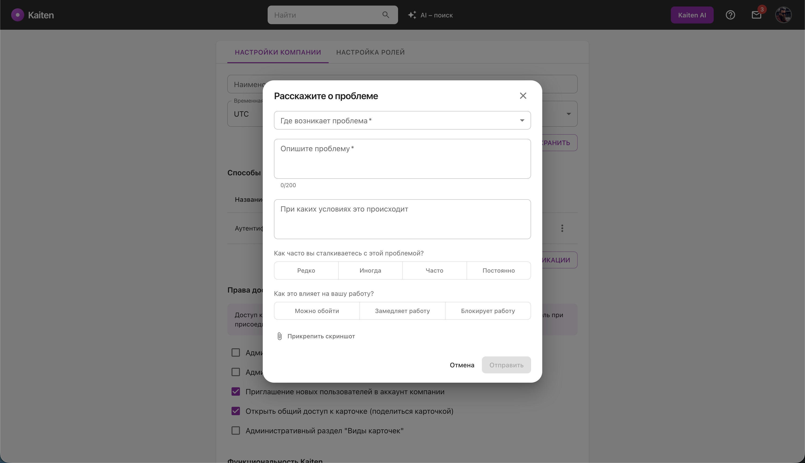
Форма обратной связи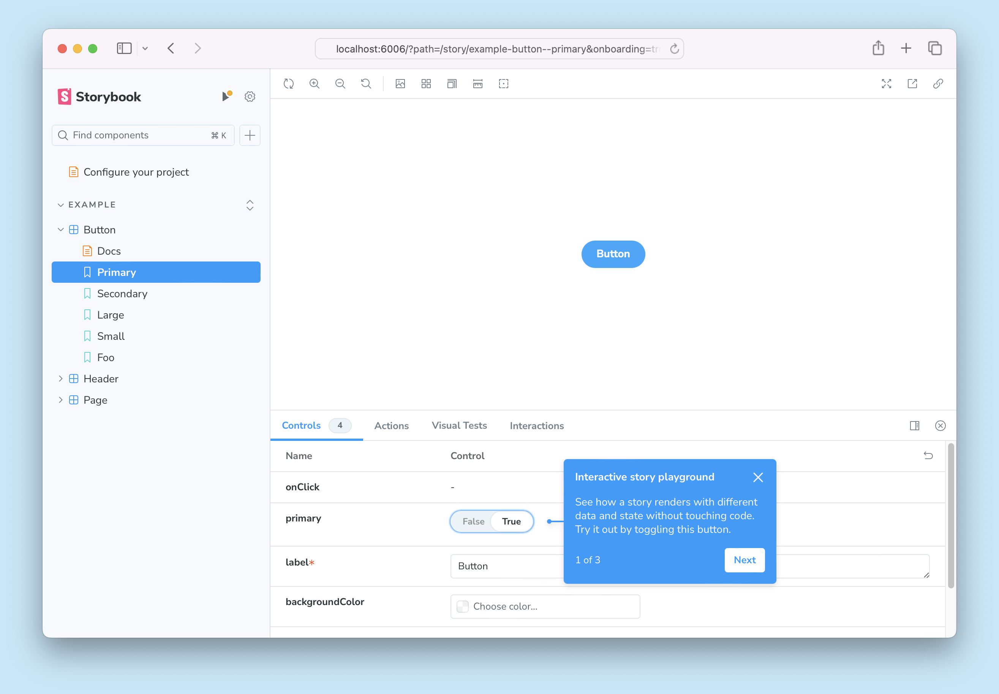
Дизайн-система & StorybookЧто проверяем в следующем квартале — ставки команды на рост и удержание
Вместе создаём лучший продукт.